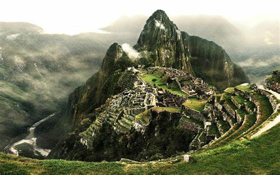
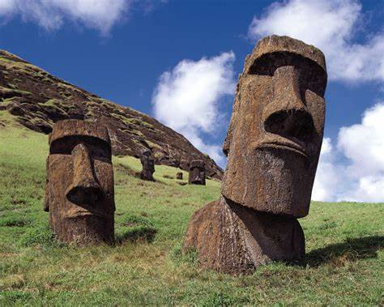
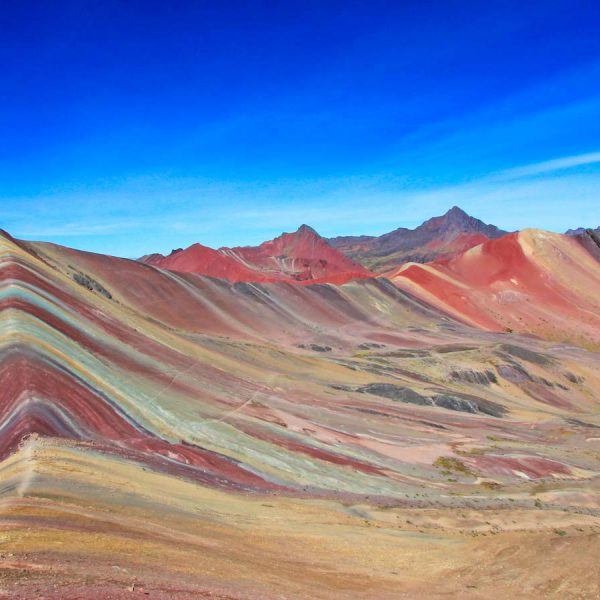

Best Places to Visit
The Lost City, Colombia
Older than Machu Picchu, this ancient city near Santa Marta is a hidden gem. Trek through lush jungles to discover its terraces and history
Galapagos Islands, Ecuador
A unique and diverse archipelago known for its wildlife,
including giant tortoises and marine iguanas. Snorkel with sea lions and explore volcanic landscapes
Machu Picchu, Peru
World wonder perched on a mountain. Explore the ancient Inca city, its terraces, and breathtaking views of the Andes

Easter Island, Chile
Explore this mystical island with its stone statues (moai) and learn about its Polynesian heritage and mysterious past

Rainbow Mountain, Peru
Hike to this colorful peak with vibrant stripes caused by mineral deposits. The views are worth the effort
